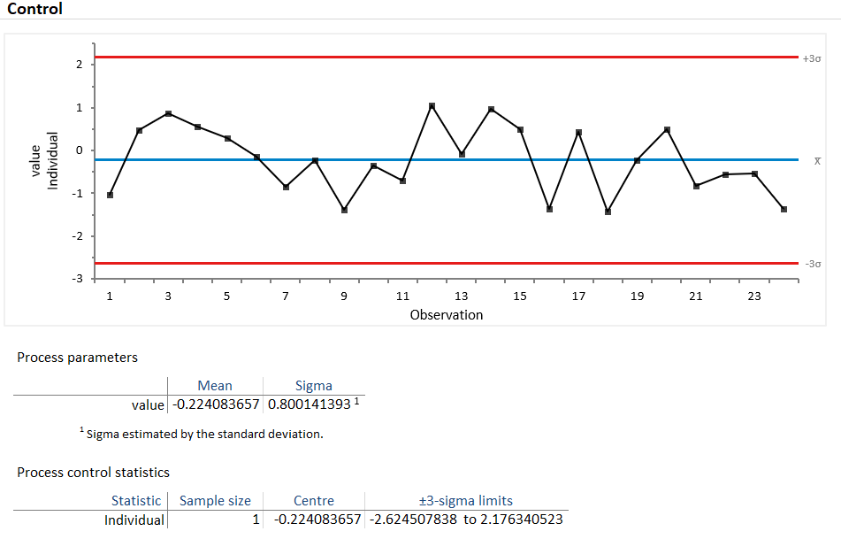

7 Kontrolldiagram
Et kontrolldiagram er mer sensitivt for å vise spesielle typer variasjon enn et run diagram. For å oppnå denne økte sensitiviteten er det imidlertid viktig at man velger riktig type kontrolldiagram ut fra hvilken type data man har. Her vil flytdiagrammet på s.xxxx kunne være til hjelp for å velge riktig type, men vi vil også gå gjennom hvert enkelt kontrolldiagram nedenfor. Man skal imidlertid ikke anta at et seriediagram er «mindre verdt» enn et kontrolldiagram. Selv om kontrolldiagram er mer sensitive ovenfor spesielle typer variasjon, er seriediagram mer sensitive ovenfor mindre skifter i dataene (under 2 SD) enn kontrolldiagrammene som typisk reagerer på større skifter i dataene (rundt 2 SD og mer) (Anhøj and Olesen 2014). Et seriediagram kan derfor ofte være et viktig første steg før man tar i bruk mer sofistikerte verktøy som kontrolldiagram (Perla, Provost, and Murray 2011).
En spesiell egenskap ved kontrolldiagram er at den kan hjelpe oss til å se yteevnen til en stabil prosess. Med det mener vi hvilke grenser prosessen trolig vil holde seg innenfor. Dette kalles ofte for prosesskapabilitet. Dette vil vi komme nærmere tilbake til i et senere avsnitt.
Så hva er et kontrolldiagram? Et kontrolldiagram er en statistisk tilnærming til å se på prosesser, variasjon i prosesser og om prosesser produserer resultater innenfor gitte akseptable grenser. Det likner på i stor grad på et seriediagram. Vi plotter inn en rekke hendelser eller observasjoner i et diagram der tiden for observasjonene plottes fortløpende i tid på x-aksen og verdien eller antall hendelser på y-aksen. Det et kontrolldiagram tilfører er at det inkluderer mer avanserte analyser gjennom å regne ut to kontrollgrenser som lar oss vurdere statistisk etter andre regler enn seriediagrammet om en prosess har normal eller unormal variasjon. I tillegg er kontrolldiagrammene basert på at sentraltendensen er gjennomsnittet, ikke median (som i seriediagrammet).
Shewhart baserte sin tilnærming til kontrolldiagram på matematisk teori (se vedlegg 7 for forklaring på Chebyshevs teorem) og egne empiriske erfaringer når han satt verdiene for øvre og nedre kontrollgrenser til tre sigma (tre standardavvik). Flere tiårs erfaring fra en lang rekke områder viser at tre sigma som grenseverdier holder vann (Mohammed, Worthington, and Woodall 2008).
Et kontrolldiagram kan se slik ut (R pakken qicharts2 (Anhøj 2020):
Figure 7.1: Eksempel kontrolldiagram i qicharts
Observasjonene/målingene plottes som punkter sekvensielt i tid. Snittet er -0,2, UCL 2,2 og LCL -2,7.
Tilsvarende data ved bruk av R pakken qcc (Scrucca, Snow, and Bloomfield 2017):Figure 7.2: Eksempel kontrolldiagram i qcc
Alle kontrolldiagram vil ha tre horisontale linjer: En gjennomsnittsverdi, en øvre kontrollgrense og en nedre kontrollgrense (øvre og nedre kontrollgrense kan ved enkelte typer kontrolldiagram avvike fra en ren horisontal linje, men ha et horisontalt mønster.
Ulike programmer eller R-pakker gir ulik grafisk framstilling.Analyse-It i Excel gir dette for samme data:

Vi skal også være oppmerksom på at de kan opererer med ulike “regler” for når de flagger unormal variasjon. Ulike programmer kan imidlertid ha lagt inn noe ulike regler for hva som betraktes som unormal variasjon. Det er derfor lurt å sette seg inn i hvilke regler som benyttes i det programmet du bruker – alle programmene vil, på en eller annen måte, indikere unormal variasjon hvis vi ber programmet om å gjøre det. Og de fleste programmene vil også la oss velge mellom hvilke kontrollregler vi ønsker å bruke. Her må man altså sjekke opp ut fra hvilket program/R-pakke man ønsker å bruke. I det videre vil vi i hovedsak bruke qicharts2. Ulike sett regler har vokst fram fra det som regnes som de opprinnelige 4 reglene (1, 2, 5 og 6) (Western Electric Company 1956), til Nelson (1984) 8 regler som er modifisert av flere, blant annet Montgomery (2020) (som qicharts2 bruker).
Test | Regel | Indikasjon |
1 | 1 punkt utenfor kontrollgrensene | En større endring |
2 | 2 av 3 påfølgende punkter er mer enn 2 sigma fra gjennomsnittsverdien og i samme retning | En mindre, men vedvarende endring |
3 | 4 av 5 påfølgende punkter er mer enn 1 sigma fra gjennomsnittsverdien og i samme retning | En mindre, men vedvarende endring |
4 | 8 påfølgende punkter er på samme side av gjennomsnittet | Ikke-tilfeldig systematisk variasjon |
5 | 6 påfølgende punkter er i stigende eller synkende trend (etter hverandre) | En middels endring |
6 | 15 påfølgende punkter er innenfor +/- 1 sigma fra gjennomsnittet | En liten endring |
7 | 14 påfølgende punkter alternerer opp og ned (annenhver opp og ned i forhold til foregående verdi) | Stratifisering (at vi egentlig har to eller flere prosesser – et histogram vil f.eks. kunne vise en bimodal distribusjon) |
8 | 8 påfølgende punkter på samme side av gjennomsnittet og ingen innenfor +/- 1 sigma | Blandet variasjon |
Bruk av regel 1 på en normalfordelte data vil kunne gi «falsk alarm» (vise unormal variasjon når det ikke finnes) i 1 av 370 tilfeller i gjennomsnitt. Hvis man imidlertid legger til testene 2, 5 og 6 stiger raten av feil alarmer til 1 av 91,75 tilfeller. Et godt råd som ofte gis er å velge tester før man lage kontrolldiagrammene basert på kjennskap til prosessen man holder på med. Som Anhøj (2021a) påpeker: “It is a common misunderstanding that control charts are superior to run charts. The confusion may stem from the fact that different sets of rules for identifying non-random variation in run charts are available, and that these sets differ significantly in their diagnostic properties.”
Eksempel på kontrolldiagram med indikasjon på et eller flere brudd på regler for normal variasjon:

Figure 7.3: Oversikt regler kontrolldiagram
## facet1 facet2 part n.obs n.useful longest.run longest.run.max n.crossings
## 1 1 1 1 29 29 16 8 1
## n.crossings.min runs.signal aLCL CL aUCL sigma.signal
## 1 10 1 1.914331 2.368895 2.823458 24Vi skal i videre i dette kapittelet ta for oss ulike typer kontrolldiagrammene (ref. flytskjema for valg av kontrolldiagram). Vi vil vise et eksempel på hvert av de vanlige kontrolldiagrammene. For hvert eksempel finnes det en Excelfil med dataene som er brukt for de ulike eksemplene og en video som viser framgangsmåten i Excel. Grunnen til dette er at for mange vil Excel være et mye mer kjent grensesnitt enn R. Samtidig, ved å se på videoen og stegene som gjøres, ser man hvordan det enkelte kontrolldiagram er bygd opp. Selvsagt er dette mye mer tidkrevende enn å bare kjøre analysen i R, men det kan gi en fin innsikt i “hva som egentlig skjer.” På sikt mener vi det er mye å hente på å bruke R og pakken qicharts2 eller pakken qcc. Alternativt kan man investere i et tillegg til Excel som nevnt i kapittel 1.
7.1 Telledata (attributter)
Diagrammene i dette delkapittelet handler om data der vi kan telle og putte dataene inn i kategorier. Motsetningen er måledata som er kontinuerlige data som behandles i neste delkapittel.
7.1.1 p-diagram
P-diagrammet er trolig det mest brukte diagrammet i helsesektoren (Anhøj 2021a). Her er dataene binomiale, dvs type ja/nei. Vi kan f.eks. registrere om det er eller ikke er et avvik fra en gitt rutine. P-diagrammet og NP-diagrammet skiller seg kun fra hverandre ved at NP-diagrammet forutsetter en lik størrelse på utvalget hver måling, mens P-diagrammet brukes når utvalgsstørrelsen varierer. Hvis vi f.eks. registrerer antall avvik i en rutine pr uke og antallet gjennomføringer av rutinen varierer fra uke til uke bør vi bruke et P-diagram.
La oss tenke oss at vi har følgende data som viser antall keisersnitt og totalt antall fødsler på et sykehus (eksempeldata modifisert fra QIMacros 2021).
År 1 | År 2 | ||||
Måned | Keisersnitt | Fødsler | Måned. | Keisersnitt. | Fødsler. |
Jan | 65 | 370 | Jan | 62 | 374 |
Feb | 64 | 383 | Feb | 48 | 355 |
Mar | 77 | 446 | Mar | 57 | 393 |
Apr | 59 | 454 | Apr | 64 | 417 |
Mai | 64 | 463 | Mai | 66 | 434 |
Jun | 74 | 431 | Jun | 55 | 421 |
Jul | 72 | 443 | Jul | 51 | 417 |
Aug | 67 | 451 | Aug | 82 | 444 |
Sep | 59 | 433 | Sep | 65 | 429 |
Okt | 65 | 407 | Okt | 69 | 411 |
Nov | 60 | 381 | Nov | 62 | 386 |
Des | 68 | 406 | Des | 66 | 357 |